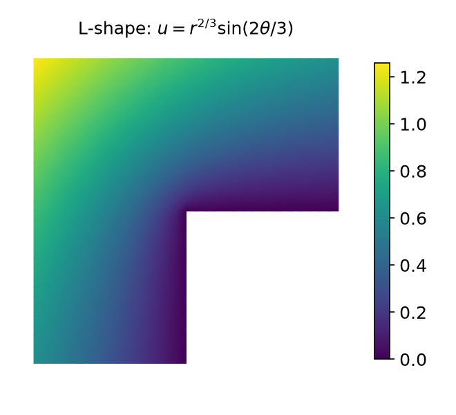
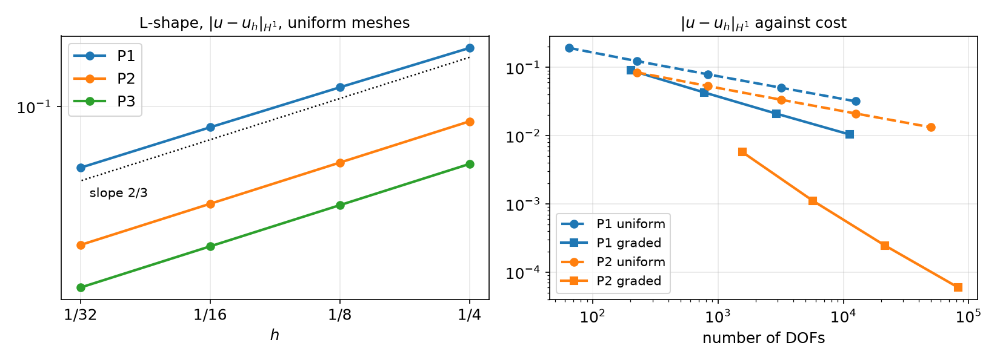

AI-based Materials and Process Simulation I
Week 07 — Weak Derivatives and Sobolev Spaces · Céa’s Lemma · Elliptic Regularity · Aubin–Nitsche · Computing Convergence Rates Correctly · Corner Singularities and Graded Meshes
Process Systems Laboratory
Department of Chemical and Biomolecular Engineering, SeoulTech
Today
| Part | Topic | Time |
|---|---|---|
| Quiz | Week 6 material (closed-AI) | 10 min |
| A | Theory — weak derivatives, Sobolev spaces, Céa’s lemma, elliptic regularity, Aubin–Nitsche | 70 min |
| B | Measuring rates correctly — which h, which error formula, which quadrature | 35 min |
| C | Regularity in action — corner singularities, graded meshes | 35 min |
| D | LLM pitfalls in convergence studies · assignment (a rate report) | 15 min |
Lab notebook: W07_lab.ipynb · Assignment: W07_HW7.ipynb (due before Week 8) · Week 8: midterm exam (Weeks 1–7), first 90 min
Weeks 4–6 in one slide
| Interpolation (Week 4) | |u-\mathcal I_hu|_{H^i}\le Ch^{k+1-i}|u|_{H^{k+1}} |
| Lax–Milgram (Week 5) | continuous (M) + coercive (\gamma) ⇒ unique, stable, same \gamma on V_h |
| MMS (Weeks 5–6) | Pk: rates k+1 in L^2, k in H^1 — observed, not yet proved |
| Boundary conditions (Week 6) | coercivity needs \|v\|_{L^2}\le C|v|_{H^1}; misaligned interfaces lose the rate |
This week: the proof — and its fine print.
- u_h\to u where? We need a space that contains all V_h and their limits: Sobolev spaces.
- FE error ≤ constant × interpolation error: Céa. One extra power in L^2: Aubin–Nitsche.
- Both need u\in H^{k+1}. When u is less regular, the rate drops — for every degree.
Part A — Convergence Theory
§A1 The weak derivative
Definition — weak derivative
g\in L^1_{\rm loc}(\Omega) is the weak derivative D^\alpha_wf of f\in L^1_{\rm loc}(\Omega) if \int_\Omega\phi\,g\,dx=(-1)^{|\alpha|}\int_\Omega D^\alpha\phi\,f\,dx\qquad\forall\phi\in C_0^\infty(\Omega).
Integration by parts with a test function \phi that vanishes near \partial\Omega — no boundary terms. The derivative moves onto \phi.
| f on (-1,1) | weak derivative | why |
|---|---|---|
| smooth | classical f' | integration by parts |
| |x| | \operatorname{sign}(x) | split at 0; the boundary terms \pm\phi(0)\cdot0 vanish |
| \operatorname{sign}(x) | none in L^1_{\rm loc} | -\int\phi'\operatorname{sign}=2\phi(0) — that is 2\delta_0, not a function |
FE derivative = weak derivative for C^0 elements: on each cell integrate by parts; the facet terms cancel because u is continuous and \mathbf n^+=-\mathbf n^- (the same argument as the FE divergence theorem of Week 6). A discontinuous u_h has no weak gradient — that is why H^1 elements must be C^0.
§A2 Sobolev spaces
Definition
H^k(\Omega)=\{u\in L^2:D_w^\alpha u\in L^2\ \text{for}\ |\alpha|\le k\} with \|u\|^2_{H^k}=\sum_{|\alpha|\le k}\|D^\alpha_wu\|^2_{L^2}. A Hilbert space (complete); H^{k+1}\subset H^k.
Completeness is the point: a Cauchy sequence of FE solutions u_h has a limit in H^1 — the space where Lax–Milgram gives u. Smooth functions are dense in H^k: prove estimates for smooth u, then pass to the limit.
Measuring regularity. In 2D near a corner, u=r^\alpha (\alpha>0): |\nabla u|^2=\alpha^2r^{2\alpha-2} and \int_0^1r^{2\alpha-2}\,r\,dr<\infty\iff\alpha>0. In general r^\alpha\in H^s for s<1+\alpha (fractional s allowed).
| Sobolev embedding (n = dimension) | |
|---|---|
| H^k\subset C^0 if k>n/2 | 1D: H^1 functions are continuous; 2D, 3D: need H^2 |
| consequence | point values are bounded on H^1 in 1D, not in 2D (Weeks 5–6) |
§A3 Strong and weak solutions
-\Delta u+u=f, \partial_nu=0 (Helmholtz): weak = find u\in H^1 with \int\nabla u\cdot\nabla v+uv=\int fv for all v\in H^1.
- Strong ⇒ weak: multiply by v\in H^1, integrate by parts — valid for u\in H^2, v\in H^1 (the trace \partial_nu|_{\partial\Omega} exists).
- Weak ⇒ strong (if u\in H^2): take v\in C_0^\infty ⇒ -\Delta u+u=f in L^2; then arbitrary v ⇒ \int_{\partial\Omega}\partial_nu\,v=0 ⇒ \partial_nu=0.
The weak form carries both the PDE and the natural boundary condition (Week 6). The weak solution always exists (Lax–Milgram); whether it is in H^2 — or H^{k+1} — is a separate question: regularity, §A6.
§A4 Céa’s lemma
Theorem — Céa
b continuous (M) and coercive (\gamma) on V, u\in V the solution, u_h\in V_h\subset V the Galerkin solution. Then \|u-u_h\|_V\le\frac M\gamma\min_{v\in V_h}\|u-v\|_V\le\frac M\gamma\|u-\mathcal I_hu\|_V .
Proof. Galerkin orthogonality: b(u-u_h,v)=0 for v\in V_h. For any v\in V_h, \gamma\|u-u_h\|^2\le b(u-u_h,u-u_h)=b(u-u_h,u-v)+\underbrace{b(u-u_h,v-u_h)}_{=0}\le M\|u-u_h\|\,\|u-v\|. \ \square Symmetric b: u_h is the best approximation in the energy norm, and the constant improves to \sqrt{M/\gamma} (HW5 Q1).
§A4 Céa in practice
How pessimistic is M/\gamma? -\nabla\cdot(k\nabla u)=f, k=1\,|\,\kappa across x=\tfrac12 (fitted mesh), P1, \|u-u_h\|_{H^1}/\|u-\mathcal I_hu\|_{H^1}:
| \kappa | 1 | 10 | 100 | 1000 |
|---|---|---|---|---|
| ratio, N=8\,/\,32 | 0.998 / 1.000 | 1.000 / 1.000 | 1.001 / 1.000 | 1.001 / 1.000 |
| bound \sqrt{M/\gamma}\approx\sqrt\kappa | 1 | 3.2 | 10 | 31.6 |
Céa is a worst-case bound. Here the FE solution is as good as the interpolant even for \kappa=1000 — the rate comes from interpolation, the constant from the problem. Both matter: the rate for refinement, the constant for coarse meshes.
§A5 Convergence in H^1
Céa + the interpolation estimate (Week 4, extended from smooth u to u\in H^{k+1} by density): \|u-u_h\|_{H^1}\le\frac M\gamma\|u-\mathcal I_hu\|_{H^1}\le C\,h^k\,|u|_{H^{k+1}} .
If u is less regular, u\in H^s with 1<s<k+1: the interpolation estimate holds with s in place of k+1: \|u-u_h\|_{H^1}\le C\,h^{\min(k,\,s-1)}\,|u|_{H^s},\qquad \|u-\mathcal I_hu\|_{L^2}\le Ch^{\min(k+1,\,s)}|u|_{H^s}.
§A5 The rate needs regularity
Interpolating u=r^\alpha on the unit square (singular at the corner 0), measured rates:
| P1 L^2 / H^1 | P2 L^2 / H^1 | P3 L^2 / H^1 | predicted \min(k+1,1+\alpha) / \min(k,\alpha) | |
|---|---|---|---|---|
| r^{0.5} | 1.50 / 0.50 | 1.50 / 0.50 | 1.50 / 0.50 | 1.5 / 0.5 for every k |
| r^{1.5} | 2.00 / 1.00 | 2.50 / 1.50 | 2.50 / 1.50 | P1: 2 / 1, P2–P3: 2.5 / 1.5 |
| r^{2.5} | 2.00 / 1.00 | 3.00 / 2.00 | 3.50 / 2.50 | k+1 / k up to 3.5 / 2.5 |
The rate is the smaller of what the element can do and what the function allows. A higher degree helps only if u is smooth enough. r^{0.5}: P3 has 9× the DOFs of P1 and the same rate.
§A6 Elliptic regularity — and when it fails
Theorem — elliptic regularity (convex domain)
If \Omega is convex (or has a smooth boundary) and w solves -\Delta w+w=g, \partial_nw=0 (or -\Delta w=g, w=0) with g\in L^2, then w\in H^2 and |w|_{H^2}\le C\|g\|_{L^2}.
Re-entrant corners. Near a corner of interior angle \omega, solutions of -\Delta u=f (zero Dirichlet data on both sides) contain u_{\rm sing}=r^{\lambda}\sin(\lambda\theta),\qquad\lambda=\frac\pi\omega,\qquad u_{\rm sing}\in H^{1+\lambda-\varepsilon}\ \text{only}.
| corner angle \omega | \pi/2 (square) | \pi (straight) | 3\pi/2 (L-shape) | 7\pi/4 | 2\pi (crack) |
|---|---|---|---|---|---|
| \lambda=\pi/\omega | 2 | 1 | 2/3 | 4/7 | 1/2 |
| u\in H^2? | yes | yes | no | no | no |
Convex ⇔ all angles <\pi ⇔ \lambda>1 ⇔ H^2. A single re-entrant corner caps the H^1 rate at \lambda — §C1.
§A7 Aubin–Nitsche: one more power in L^2
Theorem — Aubin–Nitsche (convex domain)
\|u-u_h\|_{L^2}\le C\,h^{k+1}|u|_{H^{k+1}}.
Proof (duality). Let w solve the dual problem b(v,w)=(u-u_h,v) for all v, i.e. -\Delta w+w=u-u_h. Regularity: |w|_{H^2}\le C\|u-u_h\|_{L^2}. \|u-u_h\|^2_{L^2}=b(u-u_h,w)=b(u-u_h,\,w-\mathcal I_hw)\le M\,\|u-u_h\|_{H^1}\,\|w-\mathcal I_hw\|_{H^1}\le C\,\|u-u_h\|_{H^1}\;h\,|w|_{H^2}. Galerkin orthogonality removed \mathcal I_hw\in V_h. Divide by \|u-u_h\|_{L^2}: \;\|u-u_h\|_{L^2}\le C\,h\,\|u-u_h\|_{H^1}\le Ch^{k+1}|u|_{H^{k+1}}. \square
The extra h is the interpolation error of the dual solution. If the dual problem is only H^{1+\lambda} (re-entrant corner), the gain is h^{\lambda}: L^2\ \text{rate}=H^1\ \text{rate}+\min(1,\lambda) .\qquad\text{L-shape: }\tfrac23+\tfrac23=\tfrac43 .
§A8 Summary of the theory and exercises
| H^1 rate | L^2 rate | |
|---|---|---|
| u\in H^{k+1}, convex domain | k | k+1 |
| u\in H^s, s<k+1 | s-1 | s-1+\min(1,\lambda) |
| re-entrant corner, \lambda=\pi/\omega<1 | \lambda | 2\lambda |
Exercise A.1 — Zero error (Ex. 5.47)
On (0,1), P1, N cells: \int_0^1vu+v'u'=\int_0^1vx+v(1)-v(0) for all v\in V_h. Show \|u-u_h\|_{H^1}=0 for every N. Why?
Exercise A.2 — Regularity of a jump source (Ex. 5.48)
-u''=\chi_{(0,1/2)} on (0,1), u(0)=u(1)=0. In which H^s is u? Predict the H^1 and L^2 rates of P1, P2, P3 when x=\tfrac12 lies inside a cell. (§B3 shows what a computer may report instead.)
Part B — Measuring Rates Correctly
§B1 Rates: which h, how many points
\text{rate}_i=\frac{\log(E_{i-1}/E_i)}{\log(h_{i-1}/h_i)},\qquad\text{or a least-squares fit of }\log E\text{ against }\log h\text{ over the last 3–4 meshes.}
| Choice | Use when | Pitfall |
|---|---|---|
| h=1/N | uniform refinement of a structured mesh | meaningless for Gmsh or locally refined meshes |
h_{\max} = msh.h(tdim, cells).max() |
quasi-uniform unstructured meshes | one bad cell dominates |
| N_{\rm dof}^{-1/d} | always, and to compare P1/P2/uniform/graded | rate in h = d\times rate in N_{\rm dof} |
- One pair of meshes proves nothing; look for stable rates over the last refinements.
- Pre-asymptotic regime: coarse meshes do not resolve u — rates drift (Week 5: 1.95 → 1.99 → 2.00).
- A rate above theory is as suspicious as one below (wrong reference, superconvergence at special points, cancellation).
§B2 Computing the error
-\Delta u=f on the unit square, u=\sin\pi x\sin\pi y, L^2 error; serial run:
| error computed as | P2, N=8\to128 | rates | P3, N=8\to128 | rates |
|---|---|---|---|---|
| \int(u_h-u_{\rm UFL})^2 | 5.5e-4 → 1.3e-7 | 3.0, 3.0, 3.0, 3.0 | 2.0e-5 → 2.9e-10 | 4.0, 4.0, 4.0, 4.0 |
| \int u^2-2\int uu_h+\int u_h^2 | 5.5e-4 → 2.6e-8 | 3.0, 3.0, 3.0, 5.35 | 2.0e-5 → 8.2e-8 | 4.0, 3.3, 1.5, −0.9 |
| u_h-\mathcal I_hu, same space | 8.7e-5 → 1.4e-9 | 3.9, 4.0, 4.0, 4.0 | 1.2e-5 → 1.8e-10 | 4.0, 4.0, 4.0, 4.0 |
| u_h-\mathcal I u in P(k+3), DOF-wise | 5.5e-4 → 1.3e-7 | 3.0, 3.0, 3.0, 3.0 | 2.0e-5 → 2.9e-10 | 4.0, 4.0, 4.0, 4.0 |
UFL, quadrature_degree 1 |
2.3e-4 → 3.2e-8 | 3.5, 3.2, 3.1, 3.0 | 2.1e-5 → 3.1e-10 | 4.1, 4.0, 4.0, 4.0 |
- Expanded formula: a difference of O(1) numbers; below \approx10^{-7} (\sqrt{\varepsilon_{\rm mach}}) the result is noise — it even changes with
-np 2. - Same-space interpolant: measures u_h-\mathcal I_hu (superconvergent here), not the error.
- Under-integrated error: wrong magnitudes, rates survive here — but do not count on it.
§B3 The rate of a crime
-u''=\chi_{(0,1/2)}, u(0)=u(1)=0, N odd ⇒ x=\tfrac12 is the midpoint of a cell. Load chi * v * dx with chi = conditional(x < 0.5, 1, 0):
| P1 L^2 / H^1 | P2 L^2 / H^1 | P3 L^2 / H^1 | |
|---|---|---|---|
| default quadrature | 1.0 / 1.0 | 2.0 / 1.5 | 2.0 / 1.5 |
quadrature_degree 20 |
1.0 / 1.0 | 1.0 / 1.0 | 1.0 / 1.0 |
| load integrated exactly (cut cell split at \tfrac12) | 2.0 / 1.0 | 2.5 / 1.5 | 2.5 / 1.5 |
- Theory (u\in H^{5/2-\varepsilon}): H^1 rate \min(k,\tfrac32), L^2 rate \min(k+1,\tfrac52) — the last row.
- An odd Gauss rule has a point exactly on the jump;
x < 0.5puts its weight on the wrong side. The load is wrong by O(h) — a variational crime — and the computed rate is the rate of the crime. More quadrature points made it worse. - Fixes: put the discontinuity on mesh nodes (Week 6), or integrate the pieces separately. Never trust a rate you cannot explain.
§B4 A credible rate study
- Exact solution as a UFL expression; data (f, boundary values) derived from it by UFL.
- Error integrated directly (\int(u_h-u)^2), with enough quadrature for non-polynomial u; collective sums with
allreduce. - \ge4 meshes; h defined consistently, or N_{\rm dof}.
- Rates from consecutive pairs and a fit; report L^2 and H^1.
- Predict first: \min(k,s-1), +\min(1,\lambda) in L^2. Explain every deviation.
- Same numbers with
-np 1and-np 2.
Part C — Regularity in Action
§C1 Corner singularities
-\Delta u=0 on [-1,1]^2 minus a wedge at the origin, u=r^\lambda\sin(\lambda\theta) on the boundary, uniform meshes h=\tfrac14\to\tfrac1{32}, -np 2:

| \omega | element | H^1 rates | L^2 rates |
|---|---|---|---|
| 3\pi/2 | P1 | 0.64, 0.65, 0.65 | 1.27, 1.29, 1.30 |
| (\lambda=\tfrac23) | P2 | 0.67, 0.67, 0.67 | 1.40, 1.38, 1.36 |
| P3 | 0.67, 0.67, 0.67 | 1.40, 1.38, 1.36 | |
| 7\pi/4 | P1 | 0.56, 0.56, 0.57 | 1.13, 1.14, 1.14 |
| (\lambda=\tfrac47) | P2 | 0.57, 0.57, 0.57 | 1.21, 1.18, 1.16 |
| P3 | 0.57, 0.57, 0.57 | 1.19, 1.17, 1.16 |
Predicted: H^1 \lambda = 0.667 / 0.571; L^2 2\lambda = 1.333 / 1.143.
Every degree converges at the same rate. P3 costs 9× the DOFs of P1 for a constant-factor gain.
§C2 Rates and cost

Left: uniform meshes, slope \tfrac23 for every degree. Right: the same error against the number of DOFs — uniform (dashed) vs graded (solid) meshes.
§C3 Graded meshes
Make cells small where u is rough: \;h_K\lesssim H\,r_K^{\,1-\mu}, r_K = distance to the corner. With \mu<\lambda/k the rate in N_{\rm dof} is optimal, k/2 in H^1.
for _ in range(40):
msh.topology.create_entities(1); msh.topology.create_connectivity(2, 1)
cells = np.arange(msh.topology.index_map(2).size_local, dtype=np.int32)
hK, r = msh.h(2, cells), np.linalg.norm(mesh.compute_midpoints(msh, 2, cells)[:, :2], axis=1)
mark = cells[hK > 1.5 * H * np.maximum(r, H ** (1 / mu)) ** (1 - mu)]
if msh.comm.allreduce(len(mark), op=MPI.SUM) == 0:
break
msh = mesh.refine(msh, mesh.compute_incident_entities(msh.topology, mark, 2, 1))[0] # returns (mesh, parents, ...)L-shape, slope of |u-u_h|_{H^1} against N_{\rm dof} (optimal k/2):
| uniform | graded | DOFs for |e|_{H^1}\approx10^{-2} | |
|---|---|---|---|
| P1 (\mu=0.5) | 0.36, 0.34, 0.34, 0.33 | 0.55, 0.54, 0.52 | uniform >10^4 (3.2e-2 at 12 545) · graded 11 186 |
| P2 (\mu=0.25) | 0.35, 0.34, 0.34, 0.34 | 1.27, 1.14, 1.05 | graded: 6.0e-5 at 82 643 |
§C4 Math → DOLFINx
| Math | DOLFINx 0.11 |
|---|---|
| exact u, f=-\Delta u | UFL expression; ufl.atan2, ufl.conditional for \theta\in[0,\omega); -ufl.div(ufl.grad(u_ex)) |
| \|u-u_h\|_{L^2}, |u-u_h|_{H^1} | sqrt(allreduce(assemble_scalar(form((uh-u_ex)**2*dx)))) — direct, not expanded |
| enough quadrature | ufl.Measure("dx", metadata={"quadrature_degree": q}) for singular or non-polynomial u |
| h, N_{\rm dof} | msh.h(tdim, cells), V.dofmap.index_map.size_global |
| domain with a re-entrant corner | mesh.create_submesh(big, tdim, kept_cells)[0] (or Gmsh) |
| local refinement | mesh.refine(msh, edges)[0], edges = mesh.compute_incident_entities(topology, cells, 2, 1) |
| rate | np.log(E[:-1]/E[1:]) / np.log(h[:-1]/h[1:]), or np.polyfit(log h, log E, 1) |
Part D — LLMs and Convergence Studies · Assignment
§D1 Where LLM-generated rate studies go wrong
| Kind | What it looks like | Detection |
|---|---|---|
| Theory by template | “P2 converges with O(h^3)” — on an L-shaped domain | predict from regularity first |
| Self-fulfilling error | error against \mathcal I_hu in the same space; expanded \int u^2-2uu_h+u_h^2 | rates too high, noise below 10^{-7} |
| Wrong h | h=1/N on a Gmsh or refined mesh; N instead of h (negative rates) | plot against N_{\rm dof} |
| Data crimes | conditional jumps inside cells; under-integrated singular data |
rate changes with quadrature_degree |
| Overclaiming | a rate from two meshes; “converges optimally” without a number | ask for the table |
| Stale API | mesh.refine(msh, edges) used as a mesh (it returns a tuple); create_submesh(...) likewise |
AttributeError |
§D2 Writing the rate report
For every configuration in HW7:
| Step | Content |
|---|---|
| Predict | regularity of u (which H^s, why), then H^1 and L^2 rates with the formula |
| Measure | table of errors and rates, ≥ 4 meshes, plot with reference slopes; h and N_{\rm dof} |
| Compare | predicted vs observed in one table |
| Explain | every difference > 0.05: pre-asymptotic? quadrature? geometry? a bug? |
| Verify | a smooth MMS reference case that gives the textbook rates with the same code |
An LLM can draft the prose. The numbers, the prediction and the explanation of each deviation are yours — the AI-usage log must say which is which.
Assignment — HW7, due before the Week 8 lecture
HW7 — Theoretical vs observed rates (100)
- Q1 proofs: weak derivatives and r^\alpha\in H^1, Aubin–Nitsche with Dirichlet conditions and its failure at re-entrant corners, zero error for an exact V_h solution (25)
- Q2 rate report: corner domains 3\pi/2, 5\pi/4 and a smooth reference, P1–P3, uniform and graded meshes (40)
- Q3 measurement pitfalls: a jump in the data, cancellation in the error formula (15)
- Q4 LLM claims about convergence rates, checked against your own numbers (20)
Submit the executed .ipynb (restart & run all) with the AI-usage log.
Week 8: midterm exam (Weeks 1–7, closed-AI) in the first 90 minutes.
Summary
| Concept | Key idea | DOLFINx |
|---|---|---|
| Weak derivative | derivative moved onto a test function; C^0 FE derivative is weak | ufl.grad on C^0 spaces |
| Sobolev space H^k | complete; r^\alpha\in H^{s} for s<1+\alpha; H^k\subset C^0 iff k>n/2 | — |
| Céa | \|u-u_h\|\le\frac M\gamma\|u-\mathcal I_hu\|; worst case, often ≈ 1 | — |
| Regularity | convex ⇒ H^2; corner \omega>\pi ⇒ H^{1+\pi/\omega} only | create_submesh, exact r^\lambda\sin\lambda\theta |
| Aubin–Nitsche | duality ⇒ L^2 rate = H^1 rate + \min(1,\lambda) | — |
| Rate study | direct error integral, consistent h/N_{\rm dof}, prediction first | assemble_scalar, polyfit |
| Graded meshes | h_K\sim Hr^{1-\mu}, \mu<\lambda/k ⇒ optimal rate in DOFs | mesh.refine |
Next week — Midterm (Weeks 1–7), then nonlinear problems
Gâteaux derivatives, Newton’s method by hand and with NonlinearProblem / SNES.